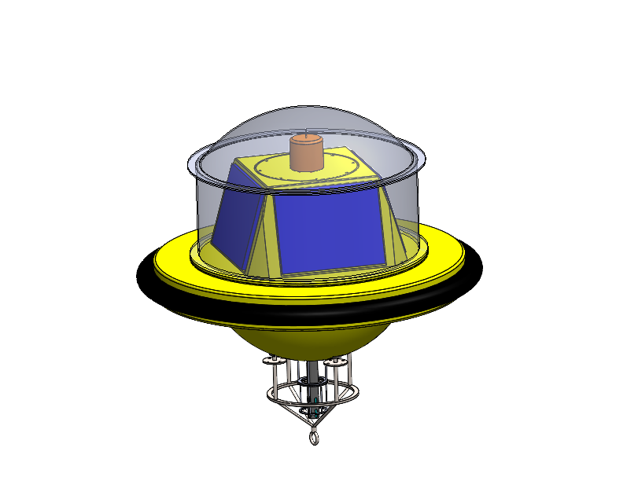
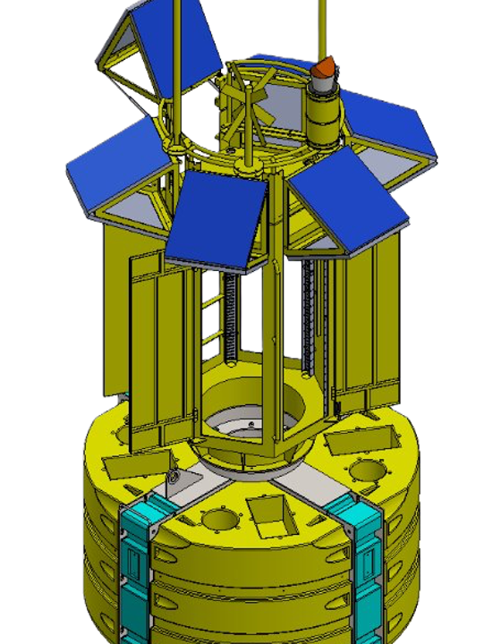
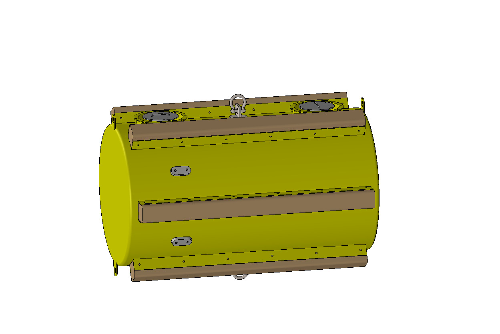
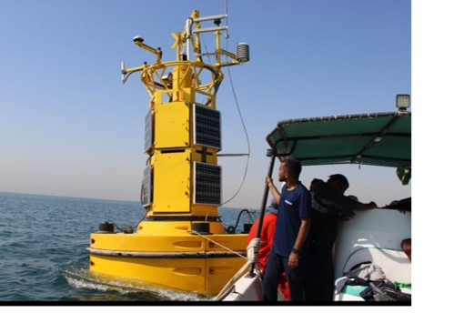
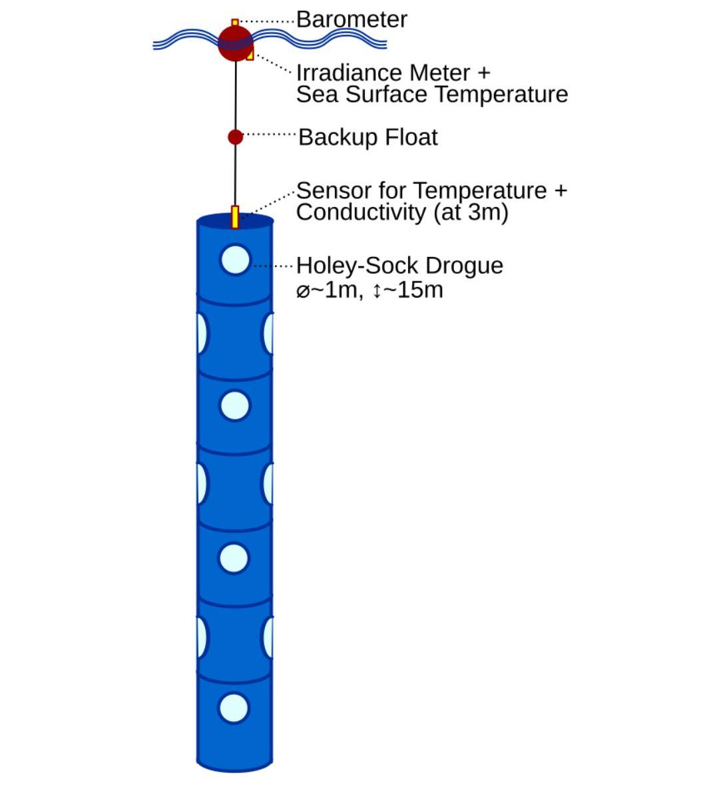
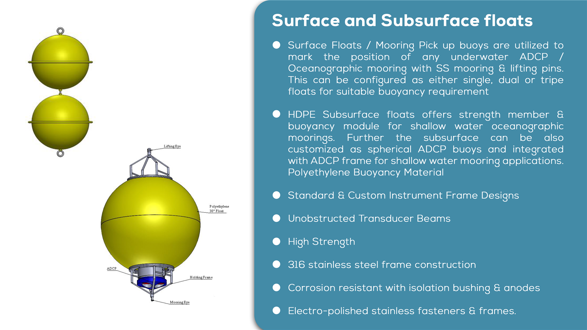
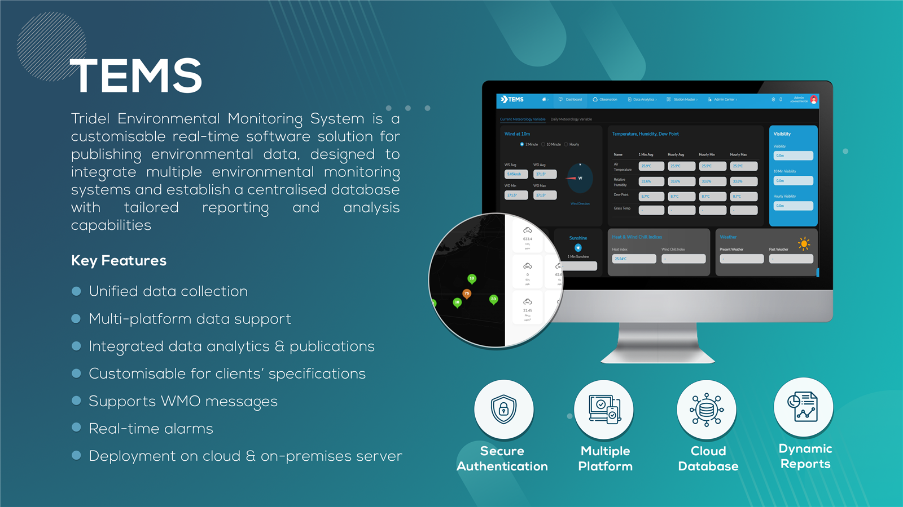
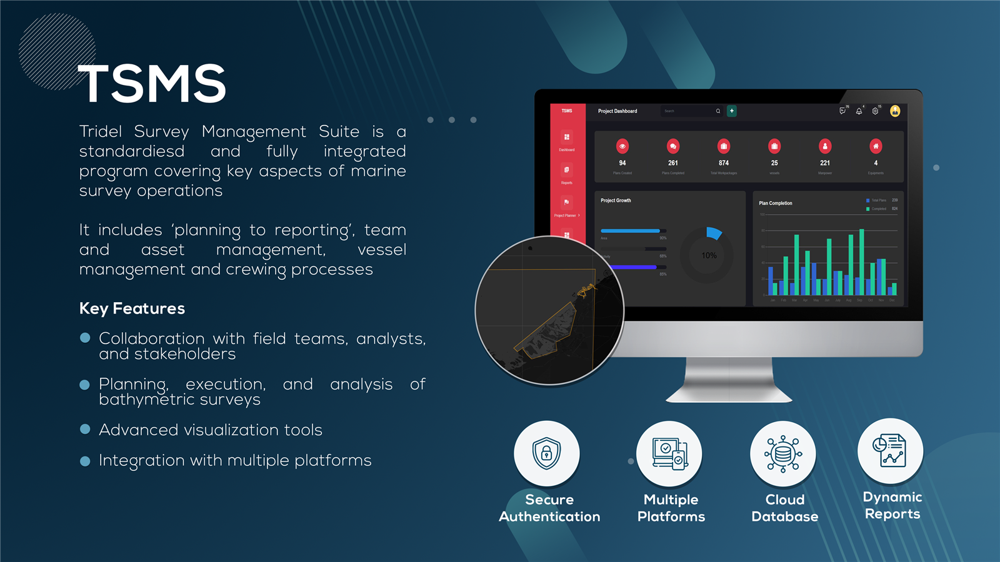
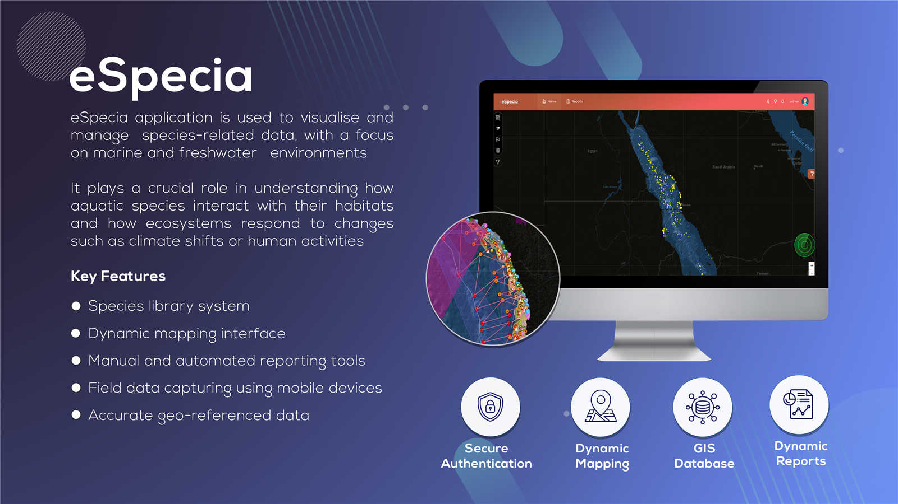
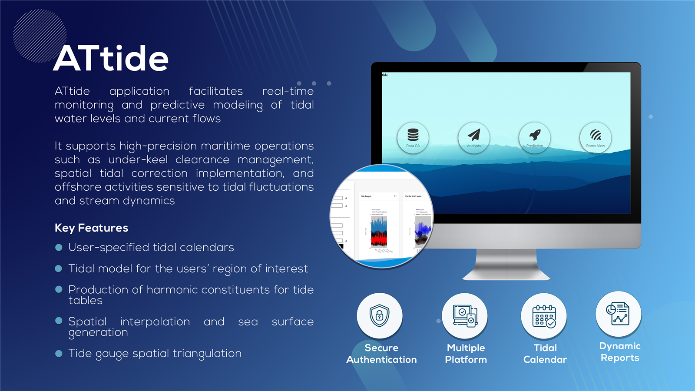

Our Products
Comprehensive Survey & Monitoring Solutions, Software, and Integrated Systems.
Survey & Monitoring Platforms
Robust hardware solutions engineering for the marine environment.
Buoys

Coastal Buoys
Robust floating platforms for nearshore and coastal applications.

Data Buoys
Bespoke platforms for advanced marine monitoring and research.

Navigation Buoys (AtoN)
Aids to Navigation for marking channels and hazards.
Wind Farm (LiDAR) Buoys
Specialized monitoring solutions for offshore wind energy infrastructures.

Mooring Buoys
Commercial, Naval, and offshore mooring solutions.

Deepwater Buoys
Long-term scientific applications in deep-water environments.

Drifter Buoys
Autonomous devices for tracking currents and marine conditions.

Surface & Sub-Surface Floats
Floats for marking underwater oceanographic moorings.
Vessels

ASVs (Autonomous Survey Vessels)


Winches
Survey & Monitoring Softwares
Advanced software platforms for data management and analysis.

TEMS
Real-time data publishing platform integrating multiple systems.

TSMS - Survey Management
Survey workflow management and reporting software.

eSpecia GIS
GIS platform for environmental and ecological data.

ATtide - Tidal Analysis
Complex tidal analysis automation.
Integrated Solutions
Comprehensive solutions for environmental and operational intelligence.
GeoDB
Geospatial Database solutions for large-scale hydrographic data storage and retrieval.
Beach MS
Beach Monitoring System employed for coastal usage and erosion monitoring.
Port MS
Port Monitoring System for operational efficiency and environmental compliance.
ECFS
Electronic Charting & Forecasting System.
AQMS (VBS)
Air Quality Monitoring System (Vessel Based System).
Forecasting systems
Advanced met-ocean forecasting systems for operational planning.